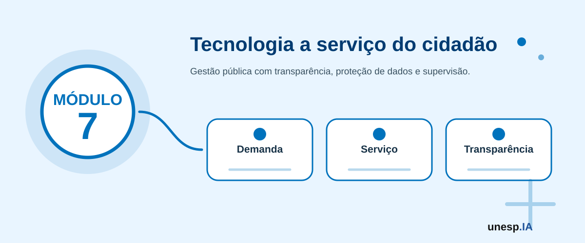

Inteligência Artificial para Gestão Pública e Prefeituras
Ferramentas relacionadas neste módulo

Apresentação
A Inteligência Artificial pode apoiar a gestão pública na melhoria dos serviços oferecidos à população, na organização de informações, no atendimento ao cidadão, na análise de indicadores, no planejamento de políticas públicas, na comunicação institucional e na tomada de decisão baseada em dados.
No contexto das prefeituras e órgãos públicos, a IA pode ser utilizada para organizar demandas de cidadãos, resumir documentos, apoiar a elaboração de comunicados, analisar dados de saúde, educação, assistência social, infraestrutura, transporte, meio ambiente, orçamento e atendimento público. Também pode auxiliar na identificação de problemas recorrentes, no acompanhamento de políticas públicas e na priorização de ações.
O Módulo 7 – Inteligência Artificial para Gestão Pública e Prefeituras tem como objetivo capacitar gestores públicos, servidores, equipes técnicas, lideranças institucionais e demais interessados para compreender e aplicar IA em situações reais da administração pública, sempre com atenção à ética, transparência, privacidade, LGPD, responsabilidade institucional, controle social e supervisão humana.
A proposta não é substituir o papel dos gestores, técnicos ou servidores públicos, mas ampliar a capacidade de organizar informações, melhorar processos, apoiar decisões e qualificar o atendimento à população.
1. Organização do Módulo
Carga horária total
20 horas.
Público recomendado
Prefeitos, vice-prefeitos, secretários municipais, gestores públicos, servidores, equipes técnicas, vereadores, conselhos municipais, lideranças institucionais, profissionais de planejamento, equipes de tecnologia, ouvidorias, setores administrativos e cidadãos interessados em compreender aplicações de IA na gestão pública.
Objetivo geral
Capacitar participantes para compreender e aplicar Inteligência Artificial na gestão pública municipal, com foco em atendimento ao cidadão, organização de documentos, análise de indicadores, monitoramento de políticas públicas, comunicação institucional, planejamento, inovação, transparência, proteção de dados e tomada de decisão baseada em evidências.
Competências desenvolvidas
Ao final do módulo, espera-se que o participante seja capaz de:
- compreender oportunidades e limites da IA na gestão pública;
- identificar problemas municipais que podem ser apoiados por IA;
- utilizar IA para melhorar atendimento ao cidadão;
- organizar demandas, documentos e informações administrativas;
- usar IA para apoiar leitura, síntese e explicação de documentos públicos;
- utilizar IA para comunicação institucional em linguagem simples;
- compreender o uso de indicadores na gestão pública;
- organizar dados simples de políticas públicas e serviços municipais;
- utilizar IA para apoiar análise de dados e relatórios;
- mapear riscos éticos, legais e institucionais no uso da IA;
- reconhecer cuidados com LGPD, dados pessoais, dados sensíveis e transparência;
- estruturar uma proposta ou protótipo de solução de IA para um problema municipal.
2. Estrutura das Unidades
| Unidade | Tema | Carga horária |
|---|---|---|
| Unidade 7.1 | IA, governo digital e oportunidades na gestão pública | 3h |
| Unidade 7.2 | IA para atendimento ao cidadão e comunicação pública | 3h |
| Unidade 7.3 | IA para documentos, legislação, normas e processos administrativos | 3h |
| Unidade 7.4 | IA para dados, indicadores e tomada de decisão municipal | 4h |
| Unidade 7.5 | Ética, LGPD, transparência e responsabilidade institucional | 3h |
| Unidade 7.6 | Laboratório de inovação pública com IA | 4h |
| Total | 20h |
A sequência pedagógica segue a lógica:
oportunidades públicas → atendimento → documentos → dados e indicadores → ética e governança → solução aplicada
Unidade 7.1 – IA, governo digital e oportunidades na gestão pública
Carga horária
3 horas
Objetivo da unidade
Apresentar as possibilidades de uso da Inteligência Artificial na gestão pública, relacionando IA, governo digital, transformação dos serviços públicos, inovação institucional e atendimento às demandas da população.
Situação de abertura
Uma prefeitura recebe centenas de solicitações por mês sobre iluminação pública, buracos em ruas, filas em unidades de saúde, transporte escolar, limpeza urbana e assistência social.
Essas informações chegam por diferentes canais: telefone, balcão, WhatsApp, ouvidoria, redes sociais, formulários e documentos físicos. Muitas vezes, os dados ficam dispersos, dificultando a organização, a priorização e o acompanhamento das respostas.
A IA pode ajudar a classificar solicitações, identificar temas recorrentes, resumir demandas, apoiar relatórios e melhorar a comunicação com o cidadão.
Conceitos principais
Governo digital
Governo digital é o uso de tecnologias digitais para melhorar a prestação de serviços públicos, ampliar o acesso à informação, tornar processos mais eficientes e aproximar governo e cidadão.
Inteligência Artificial na gestão pública
A IA na gestão pública consiste no uso de sistemas inteligentes para apoiar processos administrativos, atendimento, análise de dados, comunicação, planejamento, monitoramento e tomada de decisão.
Inovação pública
Inovação pública é a criação ou melhoria de práticas, processos, serviços e políticas para gerar valor público.
Valor público significa benefício para a sociedade, como:
- melhor atendimento;
- mais transparência;
- redução de filas;
- uso mais eficiente de recursos;
- decisões mais bem fundamentadas;
- comunicação mais clara;
- inclusão cidadã;
- melhoria da qualidade dos serviços.
Áreas de aplicação da IA na gestão pública
Atendimento ao cidadão
- organização de dúvidas frequentes;
- chatbots (assistentes conversacionais);
- triagem de solicitações;
- respostas iniciais;
- encaminhamento de demandas.
Comunicação pública
- textos em linguagem simples;
- comunicados;
- campanhas educativas;
- materiais visuais;
- orientação ao cidadão.
Documentos e processos
- resumo de documentos;
- extração de informações;
- organização de normas;
- apoio à leitura de editais;
- análise inicial de processos.
Dados e indicadores
- análise de planilhas;
- visualização de dados;
- identificação de padrões;
- monitoramento de serviços;
- relatórios de gestão.
Políticas públicas
- apoio ao planejamento;
- priorização de ações;
- acompanhamento de metas;
- análise territorial;
- identificação de problemas recorrentes.
Exemplos reais de uso municipal
Saúde
- organizar demandas por unidade de saúde;
- analisar filas e atendimentos;
- identificar reclamações recorrentes;
- apoiar campanhas preventivas.
Educação
- acompanhar frequência;
- identificar escolas com maior demanda;
- apoiar comunicação com famílias;
- organizar dados de transporte escolar.
Assistência social
- organizar atendimentos;
- identificar demandas mais frequentes;
- apoiar produção de relatórios;
- melhorar comunicação com usuários.
Obras e infraestrutura
- classificar solicitações sobre buracos, iluminação, limpeza e manutenção;
- priorizar demandas por urgência e localização;
- acompanhar prazos.
Meio ambiente
- organizar denúncias;
- monitorar demandas de coleta;
- apoiar campanhas educativas;
- analisar solicitações por bairro.
Quando a IA pode ajudar?
A IA pode ser útil quando existe necessidade de:
- organizar grande volume de informações;
- classificar demandas;
- resumir documentos;
- identificar padrões;
- apoiar relatórios;
- simplificar linguagem;
- melhorar atendimento;
- gerar indicadores;
- apoiar planejamento.
Quando a IA exige cuidado?
A IA exige cuidado quando envolve:
- dados pessoais;
- dados sensíveis;
- decisões sobre direitos;
- priorização de atendimento;
- saúde;
- assistência social;
- segurança;
- crianças e adolescentes;
- populações vulneráveis;
- impacto direto na vida das pessoas.
Na gestão pública, o uso da IA deve estar sempre subordinado ao interesse público, à legalidade, à transparência, à proteção de dados, à inclusão, à equidade e à responsabilidade institucional.
Escolha uma área municipal e responda:
- Qual problema aparece com frequência?
- Que dados ou informações existem sobre esse problema?
- Como a IA poderia ajudar?
- Qual seria o benefício para o cidadão?
- Quais cuidados seriam necessários?
Atividade guiada – Mapa de oportunidades de IA na gestão pública
Objetivo
Identificar oportunidades de aplicação da IA em áreas da administração pública municipal.
Passo a passo
- Escolher uma área municipal:
- saúde;
- educação;
- assistência social;
- obras;
- meio ambiente;
- transporte;
- cultura;
- atendimento ao cidadão;
- administração;
- finanças.
- Descrever três problemas ou desafios.
- Relacionar cada problema a uma possível aplicação de IA.
- Identificar dados necessários.
- Indicar benefícios esperados.
- Mapear riscos e cuidados.
- Organizar as ideias em um quadro.
Modelo de registro
Área municipal:
Problema identificado:
Dados ou informações disponíveis:
Uso possível de IA:
Benefício para a população:
Riscos e cuidados:
Responsável pela decisão final:
Mapa de oportunidades de IA para gestão pública municipal.
A IA deve ser usada apenas para tornar a gestão mais rápida ou também para torná-la mais justa, transparente e acessível?
Unidade 7.2 – IA para atendimento ao cidadão e comunicação pública
Carga horária
3 horas
Objetivo da unidade
Capacitar os participantes para utilizar IA na melhoria do atendimento ao cidadão, organização de dúvidas frequentes, triagem de demandas, comunicação pública, linguagem simples e produção de materiais informativos.
Situação de abertura
Uma prefeitura recebe diariamente perguntas sobre horários de atendimento, documentos necessários, inscrição em programas sociais, coleta de lixo, transporte escolar, agendamento de consultas e emissão de guias.
Muitas dúvidas são repetidas. Algumas respostas estão em documentos técnicos. Outras dependem de atualização constante. O cidadão, muitas vezes, não sabe onde procurar informação.
A IA pode apoiar a organização das perguntas frequentes, a criação de comunicados em linguagem simples e a estruturação de canais de atendimento mais acessíveis.
Conceitos principais
Atendimento ao cidadão
Atendimento ao cidadão é o conjunto de interações entre o poder público e a população para prestar informações, receber solicitações, orientar sobre serviços, registrar demandas e encaminhar respostas.
Comunicação pública
Comunicação pública é a produção e divulgação de informações de interesse coletivo, de forma clara, acessível, transparente e compreensível.
Linguagem simples
Linguagem simples é uma forma de comunicação que facilita a compreensão do cidadão, evitando termos excessivamente técnicos, frases longas e informações confusas.
Como a IA pode apoiar o atendimento?
A IA pode ajudar a:
- organizar perguntas frequentes;
- criar respostas iniciais;
- classificar solicitações por tema;
- resumir reclamações;
- identificar demandas repetidas;
- transformar linguagem técnica em linguagem simples;
- criar comunicados;
- preparar roteiros de atendimento;
- organizar fluxos de encaminhamento;
- apoiar chatbots ou assistentes digitais.
Exemplos de perguntas frequentes em prefeituras
- Como agendar atendimento?
- Quais documentos preciso levar?
- Qual o horário de funcionamento?
- Como solicitar troca de lâmpada?
- Como registrar reclamação?
- Como pedir poda de árvore?
- Como consultar transporte escolar?
- Como acessar determinado benefício?
- Onde encontro informações sobre IPTU?
- Como acompanhar uma solicitação?
Exemplo de prompt (instrução para a IA) para FAQ
Crie uma lista de perguntas frequentes para o atendimento ao cidadão de uma prefeitura, considerando serviços de saúde, educação, obras, iluminação pública, assistência social e tributos. Use linguagem simples e respostas curtas.
Exemplo de prompt para linguagem simples
Reescreva o comunicado abaixo em linguagem simples para cidadãos em geral, mantendo as informações essenciais, prazos, documentos necessários e canais de atendimento: [colar comunicado].
Exemplo de prompt para triagem
Classifique as solicitações abaixo nas categorias: saúde, educação, iluminação pública, limpeza urbana, assistência social, transporte, tributos ou outros. Depois indique quais parecem urgentes: [colar solicitações fictícias].
Uma secretaria pode usar IA para transformar um edital complexo em um resumo orientativo para o cidadão.
Uma ouvidoria pode usar IA para agrupar reclamações por tema.
Um setor de comunicação pode usar IA para criar versões mais simples de comunicados técnicos.
Um serviço de atendimento pode usar IA para criar um roteiro de perguntas e respostas.
Comunicação inclusiva
A comunicação pública deve considerar:
- pessoas idosas;
- pessoas com baixa escolaridade;
- pessoas com deficiência;
- pessoas com pouco acesso digital;
- cidadãos sem conhecimento técnico;
- comunidades vulneráveis.
A IA pode ajudar a adaptar linguagem, mas a revisão humana é indispensável.
A IA não deve inventar prazos, documentos, valores ou regras. Informações de serviços públicos precisam ser conferidas em fontes oficiais e atualizadas.
Escolha um comunicado público e peça à IA:
- resumo em linguagem simples;
- lista de documentos necessários;
- perguntas frequentes;
- versão curta para WhatsApp;
- versão para cartaz.
Depois verifique se as informações foram mantidas corretamente.
Atividade guiada – Kit de comunicação pública com IA
Objetivo
Criar materiais de comunicação pública com apoio de IA.
Passo a passo
- Escolher um serviço público ou tema municipal.
- Criar uma lista de perguntas frequentes.
- Criar respostas em linguagem simples.
- Criar um comunicado curto.
- Criar uma versão para WhatsApp.
- Criar um card ou cartaz no Canva.
- Revisar informações, prazos e documentos.
- Identificar fonte oficial de validação.
- Organizar os materiais em uma apresentação.
Ferramentas
ChatGPT, Gemini, Copilot, Canva, Google Docs, Google Slides, sites oficiais da prefeitura, LexML, portais oficiais e ferramentas de checagem.
Kit de comunicação pública em linguagem simples com apoio de IA.
Uma comunicação pública eficiente é aquela que apenas informa ou aquela que realmente é compreendida pela população?
Unidade 7.3 – IA para documentos, legislação, normas e processos administrativos
Carga horária
3 horas
Objetivo da unidade
Capacitar os participantes para utilizar IA como apoio à leitura, síntese, organização e compreensão inicial de documentos públicos, normas, legislações, editais, processos administrativos e textos institucionais.
Situação de abertura
Um servidor recebe um edital longo e precisa identificar prazos e documentos exigidos.
Um gestor precisa resumir um relatório técnico.
Um cidadão quer entender uma lei municipal.
Uma equipe administrativa precisa organizar informações de um processo.
Uma secretaria precisa transformar uma norma em orientações simples.
A IA pode ajudar a resumir e organizar esses documentos, mas não substitui análise jurídica, técnica ou administrativa oficial.
Conceitos principais
Documentos públicos e administrativos podem conter informações importantes, mas muitas vezes são longos, técnicos e difíceis de compreender.
A IA pode apoiar:
- leitura inicial;
- resumo;
- identificação de tópicos;
- extração de prazos;
- criação de perguntas;
- organização de informações;
- simplificação de linguagem;
- comparação de versões;
- elaboração de minutas preliminares.
Tipos de documentos
- leis;
- decretos;
- portarias;
- editais;
- atas;
- relatórios;
- planos municipais;
- contratos;
- convênios;
- termos de referência;
- pareceres;
- manuais;
- comunicados;
- processos administrativos.
Ferramentas úteis
NotebookLM
Pode ser usado para trabalhar com documentos fornecidos pelo usuário, permitindo perguntas, resumos e organização do conteúdo.
ChatGPT, Gemini e Copilot
Podem ajudar a resumir, explicar, reescrever e organizar textos.
LexML Brasil
Pode auxiliar na localização de legislação.
Portais oficiais
Devem ser usados para validação da informação.
Exemplo de prompt para documento
Analise o texto abaixo e organize as informações em uma tabela com: tema, obrigação, prazo, documento exigido, responsável e observações. Não invente informações que não estejam no texto.
Exemplo de prompt para edital
Resuma este edital em linguagem simples, destacando objetivo, público-alvo, prazos, documentos necessários, critérios de participação e pontos de atenção.
Exemplo de prompt para norma
Explique este trecho de uma norma em linguagem simples, separando o que é obrigação, recomendação, prazo e penalidade, se houver.
Exemplo de prompt para reunião
Transforme estas anotações em uma ata simples, com participantes, pauta, decisões, responsáveis e próximos passos.
Uma secretaria pode usar IA para criar uma versão orientativa de um edital, desde que a versão oficial continue sendo o documento de referência.
Um gestor pode usar IA para resumir um plano municipal e preparar uma apresentação.
Um servidor pode usar IA para organizar demandas de um processo em uma tabela.
A IA pode interpretar mal documentos legais ou administrativos. Ela pode omitir detalhes importantes ou sugerir conclusões incorretas. Em situações formais, a análise deve ser validada por responsável técnico, jurídico ou administrativo.
Cuidados com documentos
Antes de usar IA com documentos, verifique:
- o documento é público?
- contém dados pessoais?
- contém dados sensíveis?
- contém informações sigilosas?
- há autorização para uso?
- a ferramenta armazena os dados?
- a resposta será validada por responsável competente?
Use um pequeno trecho de documento público e peça à IA:
- resumo em linguagem simples;
- principais obrigações;
- prazos citados;
- termos difíceis explicados;
- dúvidas que precisam ser verificadas.
Atividade guiada – Síntese orientada de documento público
Objetivo
Criar uma síntese organizada de um documento público ou administrativo com apoio de IA.
Passo a passo
- Escolher um documento público curto ou trecho fornecido pelo instrutor.
- Identificar a fonte oficial.
- Solicitar resumo em linguagem simples.
- Solicitar tabela com pontos principais.
- Identificar prazos, documentos ou responsabilidades.
- Listar dúvidas para validação.
- Revisar se a IA não inventou informações.
- Organizar a síntese final.
Síntese orientada de documento público ou administrativo.
A IA pode facilitar a leitura de documentos, mas quem deve validar a interpretação final em uma decisão pública?
Unidade 7.4 – IA para dados, indicadores e tomada de decisão municipal
Carga horária
4 horas
Objetivo da unidade
Capacitar os participantes para utilizar IA na organização, análise e interpretação inicial de dados e indicadores municipais, apoiando relatórios, diagnóstico de problemas e tomada de decisão baseada em evidências.
Situação de abertura
Uma secretaria de saúde possui dados de atendimentos, mas não consegue visualizar claramente quais unidades têm maior demanda.
A educação possui informações de frequência escolar, mas precisa identificar padrões de ausência.
A ouvidoria recebe muitas reclamações, mas não consegue analisar os temas mais recorrentes.
A gestão quer comparar indicadores por bairro, mês ou serviço.
A IA pode apoiar a organização e interpretação desses dados, desde que haja cuidado com qualidade, privacidade e contexto.
Conceitos principais
Dados públicos
São dados produzidos ou mantidos por órgãos públicos que podem ser disponibilizados à sociedade, respeitando restrições legais e proteção de dados.
Indicadores
Indicadores são medidas que ajudam a acompanhar uma situação.
Exemplos:
- número de atendimentos;
- tempo médio de resposta;
- taxa de frequência escolar;
- quantidade de solicitações por bairro;
- índice de vacinação;
- número de obras em andamento;
- volume de resíduos coletados;
- orçamento executado.
Tomada de decisão baseada em evidências
Significa usar dados, informações e análises para apoiar decisões públicas, reduzindo improviso e aumentando transparência.
Fontes de dados municipais
- sistemas internos;
- planilhas administrativas;
- ouvidoria;
- formulários;
- portais de transparência;
- dados abertos;
- IBGE;
- DATASUS;
- INEP;
- sistemas estaduais;
- relatórios internos;
- diários oficiais.
Como a IA pode apoiar análise de dados?
A IA pode ajudar a:
- organizar planilhas;
- explicar indicadores;
- identificar padrões;
- resumir tabelas;
- sugerir gráficos;
- criar relatórios;
- comparar períodos;
- agrupar demandas;
- interpretar comentários;
- gerar perguntas analíticas;
- apoiar painéis.
Exemplo de planilha de demandas
| Data | Bairro | Serviço | Descrição | Status |
|---|---|---|---|---|
| 05/04 | Centro | Iluminação | Lâmpada queimada | Aberto |
| 06/04 | Vila Nova | Saúde | Falta de consulta | Em análise |
| 07/04 | Jardim Sul | Limpeza | Entulho na rua | Resolvido |
Exemplos de perguntas para IA
- Quais bairros têm mais solicitações?
- Quais serviços aparecem com maior frequência?
- Quais demandas estão abertas há mais tempo?
- Que temas aparecem nas reclamações?
- Que indicadores deveriam ser acompanhados?
- Que gráficos ajudam a visualizar esses dados?
- Quais ações poderiam ser priorizadas?
Exemplo de prompt para análise de dados
Analise a tabela abaixo e indique os principais padrões, serviços mais solicitados, bairros com maior número de demandas, possíveis prioridades e sugestões de gráficos. Use linguagem simples e não invente dados.
Indicadores por área
Saúde
- atendimentos por unidade;
- tempo médio de espera;
- vacinação;
- consultas agendadas;
- faltas em consultas.
Educação
- frequência escolar;
- evasão;
- desempenho;
- transporte escolar;
- vagas.
Obras
- solicitações por bairro;
- tempo de atendimento;
- obras concluídas;
- demandas pendentes.
Assistência social
- famílias atendidas;
- tipos de demanda;
- visitas realizadas;
- benefícios acompanhados.
Meio ambiente
- coleta de resíduos;
- denúncias;
- áreas verdes;
- ocorrências ambientais.
Visualização de dados
A IA pode ajudar a sugerir gráficos, mas a escolha deve considerar o tipo de informação.
Exemplos:
- gráfico de barras para comparar bairros;
- gráfico de linha para evolução no tempo;
- mapa para distribuição territorial;
- tabela para acompanhamento;
- painel para indicadores principais.
Dados públicos podem conter dados pessoais ou sensíveis. Antes de analisar ou compartilhar dados, é necessário verificar anonimização, finalidade, autorização, segurança e conformidade com a LGPD.
Observe uma pequena tabela de demandas municipais e peça à IA:
- resumo dos dados;
- principais categorias;
- bairros com mais registros;
- sugestões de gráficos;
- possíveis perguntas de gestão;
- cuidados com os dados.
Atividade guiada – Painel simples de indicadores municipais
Objetivo
Criar uma análise simples de dados municipais com apoio de IA.
Passo a passo
- Usar uma planilha fictícia ou pública fornecida pelo instrutor.
- Identificar colunas e tipos de dados.
- Verificar se há dados pessoais.
- Pedir à IA sugestões de análise.
- Criar indicadores simples.
- Criar gráficos em Google Sheets, Excel, Power BI ou Looker Studio.
- Pedir apoio da IA para interpretar os resultados.
- Revisar se a interpretação está correta.
- Organizar um relatório curto.
Ferramentas
Google Sheets, Excel, Power BI, Looker Studio, ChatGPT, Gemini, Copilot, dados fictícios ou dados públicos.
Relatório ou painel simples de indicadores municipais.
Dados ajudam a enxergar problemas, mas como evitar que decisões públicas ignorem contextos humanos que os números não mostram?
Unidade 7.5 – Ética, LGPD, transparência e responsabilidade institucional
Carga horária
3 horas
Objetivo da unidade
Discutir os cuidados éticos, legais e institucionais necessários para o uso responsável da IA na gestão pública, com foco em LGPD, transparência, explicabilidade, supervisão humana, equidade, segurança e responsabilidade.
Situação de abertura
Uma prefeitura decide usar IA para priorizar atendimentos.
Uma secretaria usa IA para resumir documentos com dados de cidadãos.
Um setor administrativo utiliza IA para gerar respostas automáticas.
Uma equipe usa IA para analisar informações de famílias vulneráveis.
Um gestor deseja publicar um painel com dados municipais.
Essas aplicações podem trazer benefícios, mas também envolvem riscos importantes. No setor público, o uso da IA precisa respeitar direitos, leis, princípios administrativos e responsabilidade institucional.
Conceitos principais
Ética pública
É o compromisso com o interesse público, a justiça, a integridade, a transparência, a responsabilidade e o respeito aos direitos das pessoas.
LGPD
A Lei Geral de Proteção de Dados estabelece regras para o tratamento de dados pessoais no Brasil.
Na gestão pública, isso envolve cuidado com:
- finalidade;
- necessidade;
- transparência;
- segurança;
- prevenção;
- responsabilização;
- direitos dos titulares.
Dados pessoais
Informações que identificam uma pessoa.
Exemplos:
- nome;
- CPF;
- endereço;
- telefone;
- e-mail;
- foto;
- localização.
Dados sensíveis
Informações que exigem proteção especial.
Exemplos:
- saúde;
- biometria;
- religião;
- origem racial ou étnica;
- opinião política;
- dados de crianças e adolescentes;
- informações de vulnerabilidade social.
Riscos no uso de IA na gestão pública
- vazamento de dados;
- decisões injustas;
- discriminação algorítmica;
- falta de transparência;
- erros automatizados;
- dependência excessiva da tecnologia;
- exclusão digital;
- uso de dados sem finalidade clara;
- respostas incorretas ao cidadão;
- violação de sigilo administrativo.
Princípios para uso responsável
Legalidade
Usar IA em conformidade com leis e normas.
Finalidade pública
Utilizar IA para melhorar serviços e gerar benefício coletivo.
Transparência
Informar quando e como a IA está sendo usada.
Supervisão humana
Garantir que decisões importantes tenham revisão humana.
Segurança
Proteger dados e sistemas.
Equidade
Evitar discriminação e tratamento injusto.
Explicabilidade
Buscar compreender os critérios utilizados por sistemas automatizados.
Controle social
Permitir acompanhamento, questionamento e participação da sociedade.
Checklist institucional antes de usar IA
- Qual problema público será resolvido?
- A IA é realmente necessária?
- Quais dados serão usados?
- Existem dados pessoais ou sensíveis?
- Há base legal e finalidade clara?
- A solução será transparente para o cidadão?
- Há risco de discriminação?
- Quem revisará os resultados?
- Como erros serão corrigidos?
- Como o sistema será monitorado?
- Como a população poderá questionar decisões?
- Quem será responsável institucionalmente?
No setor público, não basta a IA funcionar tecnicamente. Ela precisa ser legal, ética, transparente, segura, inclusiva e socialmente responsável.
Analise a situação:
Uma secretaria quer usar IA para priorizar atendimentos sociais.
Responda:
- Quais dados seriam usados?
- Há dados sensíveis?
- Que riscos existem?
- Quem deve revisar a decisão?
- Como garantir transparência?
- O que não pode ser automatizado sem cuidado?
Atividade guiada – Matriz de riscos no uso público da IA
Objetivo
Identificar riscos e medidas de mitigação para uma aplicação de IA na gestão pública.
Passo a passo
- Escolher uma aplicação de IA em prefeitura.
- Identificar dados utilizados.
- Mapear riscos:
- privacidade;
- viés;
- erro;
- exclusão digital;
- falta de transparência;
- uso indevido.
- Propor medidas de mitigação.
- Definir responsável pela supervisão.
- Organizar em uma matriz.
Modelo de matriz
Aplicação de IA:
Dados utilizados:
Risco identificado:
Impacto possível:
Medida de prevenção:
Responsável:
Forma de monitoramento:
Matriz de riscos e cuidados para uso de IA na gestão pública.
Uma solução pública com IA deve ser avaliada apenas pela eficiência ou também por justiça, transparência e respeito aos direitos dos cidadãos?
Unidade 7.6 – Laboratório de inovação pública com IA
Carga horária
4 horas
Objetivo da unidade
Integrar os conhecimentos do módulo por meio da elaboração de uma proposta ou protótipo simples de solução com IA aplicada a um problema municipal ou política pública.
Situação de abertura
Ao longo do módulo, os participantes discutiram oportunidades de IA na gestão pública, atendimento ao cidadão, documentos, indicadores, dados, ética e LGPD. Agora, o desafio é construir uma proposta aplicada a um problema real ou fictício de uma prefeitura.
A solução deve ser simples, responsável, compreensível e voltada à geração de valor público.
Conceitos principais
Uma proposta de IA para gestão pública deve demonstrar:
- problema público;
- público beneficiado;
- dados necessários;
- uso da IA;
- ferramenta ou abordagem;
- benefício esperado;
- riscos e cuidados;
- transparência;
- supervisão humana;
- viabilidade inicial;
- próximos passos.
Tipos de produto final
O participante ou grupo poderá desenvolver:
- chatbot (assistente conversacional) conceitual para atendimento ao cidadão;
- kit de comunicação pública em linguagem simples;
- painel de indicadores municipais;
- classificador de solicitações;
- síntese de documentos públicos;
- proposta de automação administrativa;
- guia de uso seguro de IA para servidores;
- protótipo visual de aplicativo público;
- relatório de diagnóstico com IA;
- matriz de riscos para aplicação pública.
Estrutura da proposta
1. Nome da solução
Título claro e objetivo.
2. Problema público
Qual problema municipal será enfrentado?
3. Público beneficiado
Quem será beneficiado?
4. Área responsável
Qual secretaria ou setor estaria envolvido?
5. Uso da IA
Como a IA será aplicada?
6. Dados necessários
Quais dados ou informações serão usados?
7. Ferramentas
Quais ferramentas podem apoiar a solução?
8. Produto ou protótipo
O que será apresentado?
9. Benefícios esperados
Que valor público será gerado?
10. Riscos e cuidados
Privacidade, LGPD, viés, erros, transparência e exclusão digital.
11. Supervisão humana
Quem revisa, valida e acompanha?
12. Próximos passos
Como a proposta poderia evoluir?
Modelo de apresentação final
Slide 1 – Nome da solução
Nome, participantes e área pública escolhida.
Slide 2 – Problema público
Descrição clara do desafio.
Slide 3 – Público beneficiado
Quem será impactado positivamente?
Slide 4 – Solução proposta
Como a IA será utilizada?
Slide 5 – Protótipo ou demonstração
Mostrar painel, fluxo, chatbot, comunicação ou relatório.
Slide 6 – Dados e ferramentas
Quais dados e ferramentas foram usados?
Slide 7 – Valor público esperado
Que benefício a solução traz para a população?
Slide 8 – Riscos e cuidados
LGPD, privacidade, transparência, supervisão e limites.
Slide 9 – Próximos passos
Como evoluir a solução?
A proposta deve ser apresentada como protótipo, experimento ou ideia inicial, não como solução definitiva. Toda aplicação real em gestão pública exige análise técnica, jurídica, administrativa e institucional.
Atividade prática – Proposta ou protótipo de IA para gestão pública
Objetivo
Criar e apresentar uma proposta ou protótipo de IA aplicada a um problema municipal.
Passo a passo
- Escolher uma área municipal.
- Definir o problema público.
- Identificar o público beneficiado.
- Escolher uma aplicação de IA.
- Selecionar dados necessários.
- Selecionar ferramentas.
- Criar produto ou protótipo:
- chatbot;
- painel;
- relatório;
- comunicado;
- classificador;
- guia;
- matriz de riscos.
- Mapear riscos e cuidados.
- Definir forma de supervisão humana.
- Organizar apresentação final.
- Apresentar em até cinco minutos.
- Receber feedback (retorno) da turma.
Ferramentas
ChatGPT, Gemini, Copilot, NotebookLM, Canva, Google Slides, Google Sheets, Google Forms, Power BI, Looker Studio, LexML, sites oficiais, dados fictícios ou dados públicos.
Proposta ou protótipo de solução de IA aplicada a um problema municipal ou política pública.
A melhor inovação pública é a mais tecnológica ou aquela que melhora a vida do cidadão com responsabilidade, transparência e inclusão?
Avaliação do Módulo 7
A avaliação será formativa, prática e participativa.
Critérios
- participação nas discussões;
- identificação clara de problema público;
- adequação da IA ao contexto da gestão pública;
- uso responsável das ferramentas;
- organização de documentos, dados ou informações;
- qualidade da comunicação pública produzida;
- atenção à linguagem simples e acessibilidade;
- compreensão dos cuidados com LGPD e dados sensíveis;
- identificação de riscos, vieses e limitações;
- clareza da proposta ou protótipo;
- viabilidade inicial da solução;
- consideração de transparência e supervisão humana;
- qualidade da apresentação final.
Produto final do módulo
Ao final do Módulo 7, o participante terá produzido:
Proposta ou protótipo de solução de IA aplicada a um problema municipal ou política pública.
Esse produto poderá ser:
- chatbot conceitual para atendimento;
- kit de comunicação pública;
- painel simples de indicadores;
- classificador de solicitações;
- síntese de documento público;
- relatório de diagnóstico;
- guia de uso responsável de IA;
- matriz de riscos;
- protótipo visual de aplicativo público.
Resultado esperado
Ao final do Módulo 7, o participante deverá ser capaz de identificar oportunidades de uso da Inteligência Artificial na gestão pública, utilizar IA para atendimento, comunicação, documentos, indicadores e análise de dados, além de estruturar uma proposta ou protótipo simples, ético, transparente e aplicável a um problema municipal.
O participante também deverá compreender que, no setor público, a IA deve sempre estar subordinada ao interesse público, à legalidade, à proteção de dados, à transparência, à equidade, à supervisão humana e à responsabilidade institucional.